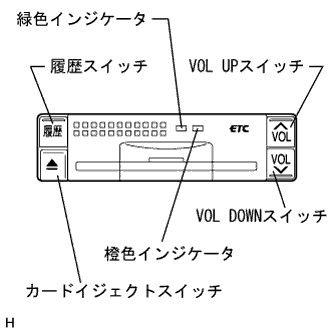
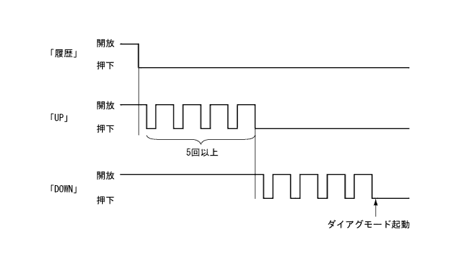
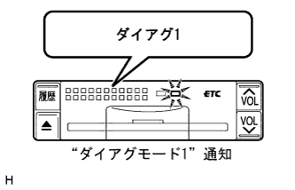
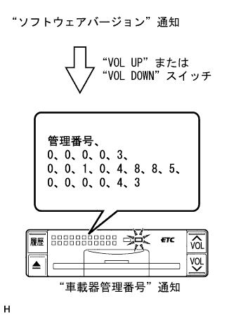
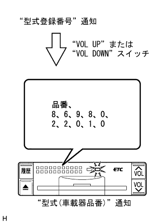

 |
How to Start Diagnosis Mode 1
- □ HINT □
- Software version
- On-board unit management number
- Model registration number
- Model (on-board unit part number)
- Error log
If an ETC card is inserted, remove it to protect the card.
- □ HINT □
- Diagnosis mode cannot be entered with a card inserted.
Turn ACC ON.
Press the "History" switch.

While holding the "History" switch, press the "VOL UP" switch 5 times or more.
While holding the "VOL UP" switch on the 5th press, press the "VOL DOWN" switch 5 times.
Diagnosis mode is entered, the orange indicator comes on, and "Diagnosis 1" is announced by voice.
- □ HINT □
- In diagnosis mode 1, the orange indicator remains on.
- During diagnosis mode, announcements are made from the toll collection (ETC) computer assembly at the default volume (volume 6), regardless of whether the HDD navigation system is connected.
 |
 |
Software Version Announcement Mode
When diagnosis mode 1 is entered, the software version is announced by voice following the "Diagnosis 1" announcement.
- □ HINT □
- If the version is 1.102, it is announced as "Version, 1, 1, 0, 2".
Check the announced content and record it on the customer problem analysis check sheet.
 |
On-board Unit Management Number Announcement Mode
After the software version is announced, pressing the "VOL UP" or "VOL DOWN" switch announces the on-board unit management number by voice.
- □ HINT □
- If the on-board unit management number is 00003-00104885-000043, it is announced as "Management number, 0, 0, 0, 0, 3, 0, 0, 1, 0, 4, 8, 8, 5, 0, 0, 0, 0, 4, 3".
Check the announced content and record it on the customer problem analysis check sheet.
On-board Unit Management Number Announcement Content Digits Meaning XXXXX (5 digits) SAM (encryption IC) manufacturer code XXXXXXXX (8 digits) SAM production lot No. XXXXXX (6 digits) SAM serial No. - □ HINT □
- The on-board unit management number is announced as "XXXXX-XXXXXXXX-XXXXXX" (X is a number from 0 to 9).
 |
Model Registration Number Announcement Mode
After the on-board unit management number is announced, pressing the "VOL UP" or "VOL DOWN" switch announces the model registration number by voice.
- □ HINT □
- If the model registration number is 0045, it is announced as "Model registration number, 0, 0, 4, 5".
Check the announced content and record it on the customer problem analysis check sheet.
Model Registration Number Announcement Content Digits Meaning XXXX (4 digits) Model registration number - □ HINT □
- The model registration number is announced as "XXXX" (X is a number from 0 to 9).
 |
Model (On-board Unit Part Number) Announcement Mode
After the model registration number is announced, pressing the "VOL UP" or "VOL DOWN" switch announces the model (on-board unit part number) by voice.
- □ HINT □
- If the model (on-board unit part number) is 86980-22010, it is announced as "Part number 8, 6, 9, 8, 0, 2, 2, 0, 1, 0".
Check the announced content and record it on the customer problem analysis check sheet.
Model (on-board unit part number) Digits Meaning XXXXX-XXXXX (10 digits) Model (on-board unit part number) - □ HINT □
- The model (on-board unit part number) is announced as "XXXXX-XXXXX" (X is a number from 0 to 9).
- It is not possible to go back to the content announced so far, so to check previously announced content again, turn the IG OFF once and start over from the beginning.
Error Log Announcement Mode

After the model (on-board unit part number) is announced, pressing the "VOL UP" or "VOL DOWN" switch announces the error codes of the recorded error log by voice.
- □ HINT □
- In error log announcement mode, the error log recorded by the self-diagnosis function of the toll collection (ETC) computer assembly during normal operation is announced.
- When error log announcement mode is entered, the error code of the most recently saved error log is announced. However, if a fatal error (error code 11, 12) is saved, that error code is announced first.
Check the error log announcement content and record it on the customer problem analysis check sheet.
- □ HINT □
- The error log consists of date information, time information (24-hour clock) and error code.
- The error log is announced in the order of error date information, time information (24-hour clock) and error code recorded in the error log.
- The date information recorded in the error log uses the date data obtained from the most recent toll processing held in the memory of the toll collection (ETC) computer assembly.
- Unless toll processing is performed in the ETC system, the value of the error log date information remains the same. For this reason, the error date information recorded in the error log may differ from the time when the error actually occurred.
If no error log is recorded, "Error log, none" is announced.
If there are error logs older than the error log being announced, pressing the "VOL DOWN" switch announces older logs 1 at a time in order. Also, if there are error logs newer than the error log being announced, pressing the "VOL UP" switch announces newer logs 1 at a time in order.
- □ HINT □
- Up to 20 past error logs are saved and announced; if this is exceeded, the oldest are deleted first.
- The error log cannot be cleared manually.
How to End Diagnosis Mode 1
Turn the IG OFF or insert a card.
- □ HINT □
- The type of card inserted is not limited to ETC cards. (Diagnosis mode 1 ends even if an incorrect card is inserted)
- When card insertion is detected, diagnosis mode 1 ends (reset is applied), and the green indicator and orange indicator come on for approximately 5 seconds.